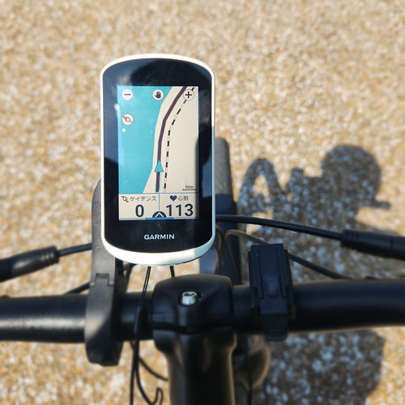
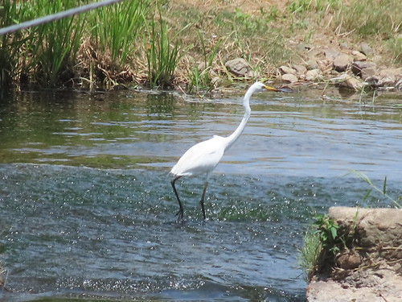
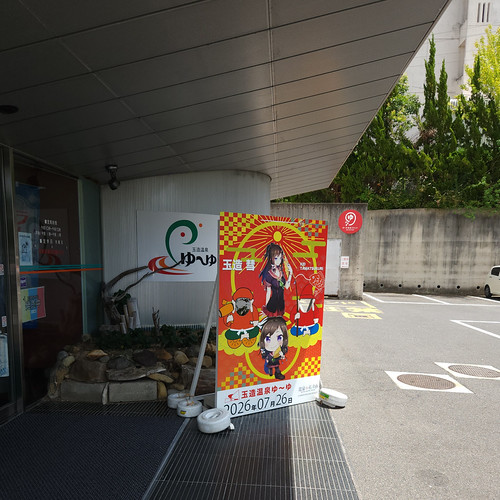
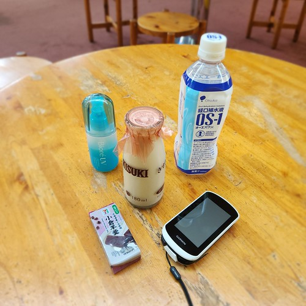
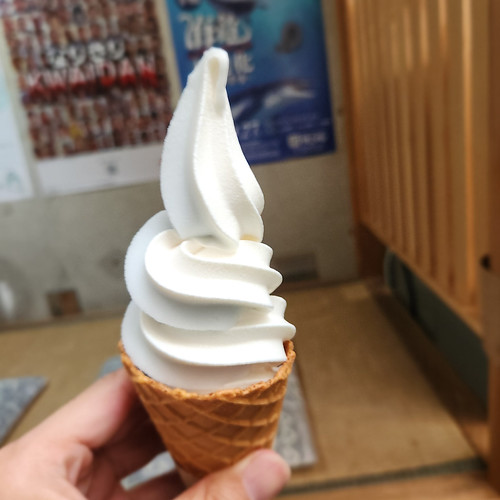
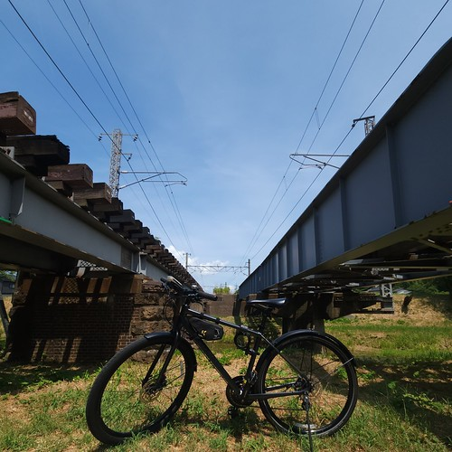
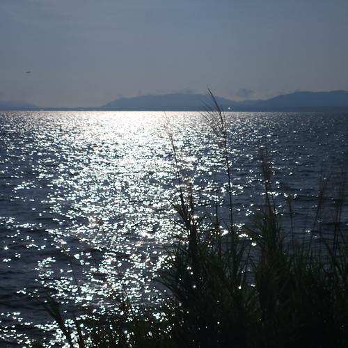

ひさしぶり玉造温泉（お散歩カメラ 2026-07-26）

自転車もだいぶ慣れてきて，休憩なしで8〜9kmを30〜40分くらいで走れるようになった。 今のところはこれが限界。 当面は1時間程度は漕ぎ続けられる体力をつけることを目標にしよう。 距離（＝巡航速度）を伸ばすのはその後だな。
オーバーホールから返ってきた自転車に，ようやくサイコンを取り付けた。

これでケイデンスと心拍数をモニタしながら走れる。
ひさしぶり玉造温泉
道のりと距離的に今の私に手頃ということで，久しぶりに玉造温泉まで走ってみた。

あー。 涼しそうだな。
…とか景色を眺めつつ「玉造温泉ゆ～ゆ」に到着。

早速入浴。 左脚をマッサージしつつ大浴場の湯船を堪能する。 ゆ～ゆの露天風呂はコンクリートに囲まれていて楽しくないので，ずっと大浴場にいたのだが… めっちゃ暑い。 30分でギブアップした（笑）
というわけで，湯上がりのコーヒー牛乳。

木次乳業さん，いつもお世話になっています。 聞いた話によると瓶のコーヒー牛乳は珍しいらしい。 松江の温泉地では普通に飲めます。
あとは水分補給用の OS-1 とセブンの羊羹っスね。 日焼け止めも塗り直さないと。
せっかくゆ～ゆに来たので，ソフトクリームを所望する。

自転車にはソフトクリームだよね！
宍道湖の蜃気楼
とりあえず県立図書館へ移動しよう。 玉湯川沿いを宍道湖方面へ下って，そこから宍道湖沿岸をぐるっと回って県立図書館へ。
途中，山陰本線を潜ってみたり。

県立図書館では読書三昧で夕方まで引きこもっていた。
帰りは，真っすぐ帰るのもつまらないので，もう一度玉湯町方面へ。 玉湯川の河口まで行ってみた。

休憩がてら宍道湖を眺めてたら旅客機が出雲空港に入るのが見えたので，写真に撮ってみたのだが…
おー。 蜃気楼になってるぢゃん。 いわゆる「浮島」って現象っスね。 下位蜃気楼とも言うらしい。 水面近くの空気が温かいと上向きに光が屈折して鏡のようになり，空が映ってるように見えるため，全体として浮いているように見えるのだ。 アスファルト道路の逃げ水と同じ原理。
実は宍道湖は，松江から出雲市方面を見たときに，たまに蜃気楼が発生する。 斐伊川の出口になってるし，大気の寒暖差が起きやすいのかも知れない。
無駄に沢山シャッターを切ってると，稀にご褒美がもらえるものである。 よかったよかった。
ブックマーク
参考

- GARMIN(ガーミン)Edge Explore 2 Power サイクルコンピューター【日本正規品】
- ガーミン(GARMIN) (Release 2022-09-22)
- スポーツ用品
- B0BD7FGVR6 (ASIN), 0753759310660 (EAN), 753759310660 (UPC)
- 評価
[Comment] Garmin 製のルート探索・ナビゲーション特化のサイコン。タッチパネル助かる。充電ポートは USB-C (not PD)。また別売りの変換ケーブルを使いモバイルバッテリからパワーマウント経由で給電することもできる。ライドタイプが「ロード」「屋内」「グラベル」の3種類しかない。 Live Segment 非対応。

- GARMIN(ガーミン) vívosmart 5 Black S/M バンド型スマートウォッチ 心拍計【日本正規品】
- ガーミン(GARMIN) (Release 2022-04-21)
- エレクトロニクス
- B09XGYX7JF (ASIN), 0753759301590 (EAN), 753759301590 (UPC)
- 評価
[Comment] サイクルコンピュータと Bluetooth または ANT+ で連携可能なスマートバンド（活動量計）として購入。 Garmin 製なのに自前では GPS 機能がない（スマホの GPS 機能と組み合わせて使う）。活動量計としての機能は十分というかありすぎる（笑）

- Canon コンパクトデジタルカメラ PowerShot ZOOM 写真と動画が撮れる望遠鏡 PSZOOM
- キヤノン (Release 2020-12-10)
- エレクトロニクス
- B08L4WKDZ7 (ASIN), 4549292179675 (EAN)
- 評価
[Comment] 望遠鏡型コンパクトデジカメ。メモリと充電器（要 Power Delivery）は別に用意する必要がある。使い勝手はまぁまぁ。

- ビオレUＶ アクアリッチ アクアプロテクトミスト 60ミリリットル (x 1)
- 花王 (Release 2023-02-08)
- ヘルスケア&ケア用品
- B0BT1X9H7B (ASIN), 4901301416438 (EAN)
- 評価
[Comment] スプレータイプで白くならない。鞄に忍ばせて手軽に使える。

- 経口補水液 OS-1 オーエスワン 500ml × 6本 オリジナルポケットティッシュ付き
- B09Z6F7MGT (ASIN)
- 評価
[Comment] 経口補水液。サイクリングの際にドラッグストアで購入している（ドラッグストアのほうが安い）。夏場はどうしても汗をかくからね。